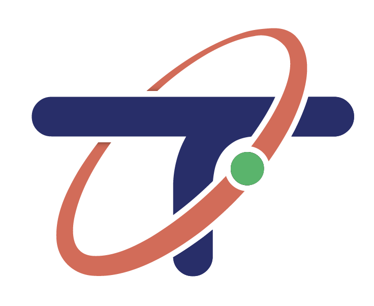
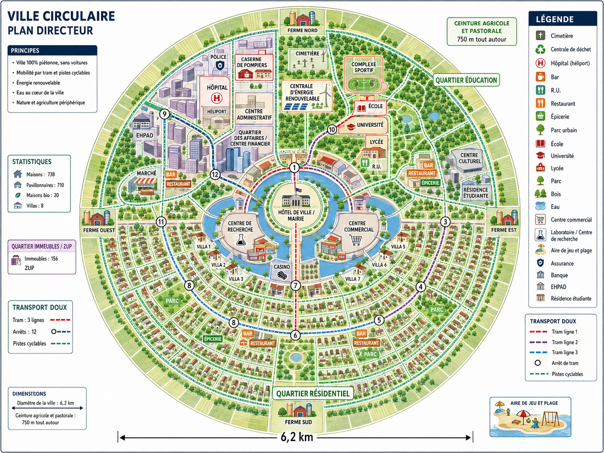

🏢 Centre administratif — Cœur de la ville avec l'hôtel de ville, centre de recherche, casino et services publics centralisés
🎓 Quartier Éducation — École, lycée, université et complexe sportif pour former les générations futures
🏘️ Quartier Résidentiel — Quartiers d'habitation mixte avec maisons individuelles et immeubles collectifs (60% du parc)
🛍️ Quartier Affaires — Marché, restaurants, centre commercial et services commerciaux
🌿 Fermes périphériques — Nord, Sud, Est, Ouest : fermes hydroponiques autonomes assurant 100% de l'alimentation
🚚 Transports — 3 lignes de tramway autonome (20 km), pistes cyclables (20 km), 100% mobilité douce sans véhicules à moteur
Doublement de la population grâce à l'expansion des quartiers résidentiels.
Production locale de 100% des besoins alimentaires via les fermes hydroponiques.
Centre mondial de recherche sur les technologies spatiales et la vie extraterrestre.
Construction d'un second dôme résidentiel et économique relié à l'autre dôme afin de garantir les échanges.
